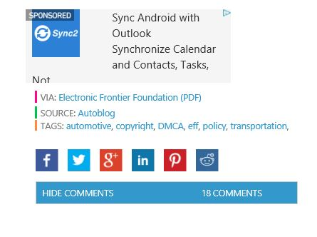

Tinkering to get better performance out of your ride is one of the more rewarding aspects of vehicle ownership. The thing is, as cars have become more and more computer-dependent, getting a horsepower boost or better gas mileage by swapping exhaust systems or air filters is just the beginning. Sometimes to hit the level you'd want, tweaking the engine control or primary control module by aftermarket means is necessary.
Thanks to the Digital Millenium Copyright Act, however, that puts wrenching on your vehicle into murky legal territory. The folks at the Electronic Frontier Foundation (PDF) have your back and are hoping to keep the DMCA out from under your hood, though. As Autoblog notes, the EFF is hoping its petition to the federal copyright office will result in removing some of the legal issues that can arise from futzing with your car's electronic brain-box.
Yes, there's a lot going on here, but there's precedent that the courts aren't exactly keen on letting the DMCA intrude on consumer rights. In 2005, the US Court of Appeals ruled against Lexmark when it tried invoking the DMCA to keep third parties from manufacturing cheap print cartridges for its printers. Hopefully something similar can happen here as well.
[Image credit: Alamy]
